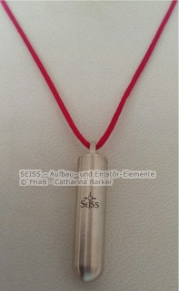
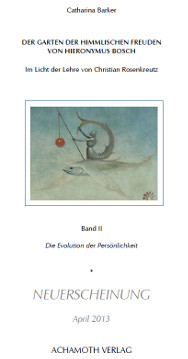
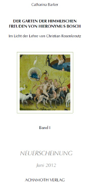

Die deutsche Version dieser Homepage finden Sie unter fhab.de Die deutsche Version dieser Homepage finden Sie unter fhab.de |
| |
|
Willi Seiss's research

Enhancement of Life Forces and Neutralizing of harmful influences from the Environment
Seiss - Elements for Health & Protection (Download as PDF; 100kB)
A Therapeutic-Occult Invention
The fundamentals of the Seiss-Elements for Health & Protection were developed by Willi Seiß in the 1980’s. this was the beginning of a discovery of the basis of what is known as “therapeutic occultism”, in which the workings of nature on the finer substantial level are applied for the purpose of healing. The genius of this inventor gave rise to other discoveries, which have so far, unfortunately, found little recognition. One example is what he called the Hydropotentizer, which can transmit to the patient the ultra-fine workings of medicines. Or measurement of the traces of the “Doppelgänger” entities in a human being, through the connections discovered by Seiss between the “cold” – Ahrimanic – disorders and the “warm” disorders in the human organization: in other words, the spiritual background of the acid and alkaline relationship, and its redox potential. (W. Seiß, Chakra-Werk, Die Entwicklung der Chakren, C 5.3/1 ff). Unfortunately, this branch of health research in general has been abandoned, because the spiritual background is insufficiently understood.
Why are formulations of metals used?
The metals came into being originally from spiritual Gold emanating from heart-warmth of the Sophia, the primal birth of matter from the spirit. This gave rise to different streams of spiritual force, which contributed significantly to human development during the planetary incarnations of the Earth – as mediators either of the Father God forces, or of those of the Mother God (e.g. the metal lead).
Spiritually, the metals are currents of force, and not forms. These force-currents of the metals have their affinity to the 3 systems of fluids in the human organization: the glandular (endocrine) system, the blood circulation and the lymph stream.
In the Seiss-Elements for Health & Protection the activity of these metallic streams is taken hold of. The metals are “etherized” in the formulation and brought to life, in part through the very finely ground micro-structure and the especially high level of purity of the material. The extended surface and the purity transmit the spiritual working of the metal to the etheric body of the human being, and from there to the physical system of fluids in the body.
The person wearing the elements feels enlivened, strengthened, freed, in many ways protected, but is at times called upon to work on his/her inner development. (C. Barker, Erkenntnisse zu dem Wirken der Sophia – Das geistige Gold und die Metalle)
I. The Pendants
The pendants are worn on the body. They can be obtained in the form of capsules made of skin-friendly ecobrass, which is produced without the pollutant lead. The containers are given a pleasing form for wear on the body.
Special pendants for the different human types:
There is main element TS, and also a number of additional elements which can be associated with various types of human nature; the abbreviated names are TS, TA, TU, TL and TE.
- TA is for the sanguine “workaholic”.
- TU for the sanguine inclining towards the choleric.
- TL for the introverted person with a tendency towards weakness of the emotional life
- TE for the opposite: moods of soul that are subject to bouts of excessive emotionalism.
- Main element TS is for general protection against influences from the surroundings, whether from pollution in the natural environment – such as radiation and electro-smog of all kinds – or from moods of antipathy and aggression coming from fellow human beings.
- The TS element also enhances one’s general sense of well-being, because it can strengthen the individuality – i.e. one’s own initiative and the efforts made out of one’s personal will. It is suitable, e.g. for people of strong convictions who need to counter the resistance they meet in the outer world.
It is recommended that main element TS in particular, but also TA and TU, is worn continuously while TE and TL can be used as the need and the situation requires.
II. The Ring Module
The “Entstör-Module” – Modules for neutralizing of harmful influences
Main element TS is suited especially for the protection of spaces. What we call the “Ring Module” was developed for this purpose. The main module, known as RM-IV, in combination with main element TS, is designed to protect an entire building – i.e. within a perimeter of around 25 metres. This means that the working of earth magnetism – which can rise from the spiritual layers of the earth (W. Seiß, Chakra-Werk, Das Erdinnere aus Zielen der Wandlung, S 1.1/7-1.1/13 LINK CW) – can be held back, depending on geopathic conditions. This applies, through a lesser extent, also to RM-III.
The “Aufbau-Module” – Modules for enhancement of life forces
Aufbau-Modules RM-0, RM-I and RM-II are able to enhance the effect which the TS, TA and especially TL element have on the body. The TL element can, for example, protect you from exhaustion caused by hours of working at the computer, if you install e.g. RM-0 or RM-I together with the TL in your working space. The radiation from this has a beneficial effect on the cardiac-circulatory system.
- RM-0 has a warming effect and stimulates the blood circulation.
- RM-I has an astringent effect initially because some types of constitution have blockage of the circulation, but after this it works as a gentle regulator of the entire limb and cardiac-circulatory system.
- RM-II has in it both of the above effects, and increases fourfold the effect of TS, TA and TL. However, RM-II is not appropriately combined with TL, as this element works mostly harmoniously at double or triple strength.
It must be stated clearly that TU and TE need no strengthening, because the dosage in the pendants has already been precisely fixed for the newly self-adjusting etheric organization. This has to do with the fact that these elements are designed to strengthen the “I”. It cannot be strengthened ad infinitum, but can be stimulated in its existing dimensions, simply and just once, but not two or three-fold. The “I” cannot be increased in size. It can only be raised by morality and extended towards the spiritual world.
- For further information and advice please contact the den Achamoth Verlag,
- Catharina Barker, Hirtengärten 7, D-88696 Owingen-Taisersdorf, Tel. +49-(0)7557-820 630
Seiss - Elements for Health & Protection (Download as PDF; 100kB)
Lead
The following is a description of the metal lead, we offer here as an example of the working of the metallic streams of force:
Lead is the basic component of all Seiss-Elements for Health & Protection, because the human being must be “earthed” by lead, but in such a way that the divine-spiritual world can still be hard. Lead was the first “differentiation” of man. That is to say, the stream of force of spiritual lead individualized the human being at the time of the first planetary stage of development (“Old Saturn”), so that he distinguishes himself from the divine-spiritual world, in order to be able to develop himself further, independently.
Lead was, nevertheless, subject to the working of the “Mother-spirit” – and of course this is still the case – so that the human being could still at that time be carried by the power of the Mother. Through the encounter with the Asuric-Ahrimanic dross – or in Rudolf Steiner’s words, with the “spirit of gravity” – the spiritual stream of force of gold was for the first time “modified” for the purpose of differentiation, as we said above. This process was carried forward in the subsequent planetary stages of development.


Recent Works


New Release

» Details
» zum Verlag